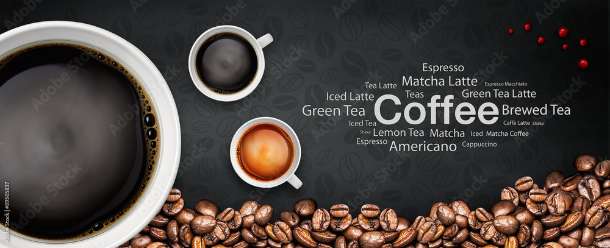

Coffee is a beverage brewed from roasted coffee beans. Darkly colored, bitter, and slightly acidic, coffee has a stimulating effect on humans, primarily due to its caffeine content. It has the highest sales in the world market for hot drinks. The seeds of the Coffea plant's fruits are separated to produce unroasted green coffee beans. The beans are roasted and then ground into fine particles typically steeped in hot water before being filtered out, producing a cup of coffee. It is usually served hot, although chilled or iced coffee is common. Coffee can be prepared and presented in a variety of ways e.g., espresso, French press, caffè latte, or already-brewed canned coffee. Sugar, sugar substitutes, milk, and cream are often added to mask the bitter taste or enhance the flavor.

Etymology Green coffee describes the beans before roasting.The word coffee entered the English language in 1582 via the Dutch koffie, borrowed from the Ottoman Turkish kahve, borrowed in turn from the Arabic qahwah Medieval Arab lexicographers traditionally held that the etymology of qahwah meant 'wine', given its distinctly dark color, and was derived from the verb qahiya,to have no appetite The word qahwah most likely meant 'the dark one', referring to the brew or the bean; qahwah is not the name of the bean, which are known in Arabic as bunn and in Cushitic languages as būn. Semitic languages had the root qhh, 'dark color', which became a natural designation for the beverage. Its cognates include the Hebrew qehe and the Aramaic qahey Although etymologists have connected it with a word meaning "wine", it is also thought to be from the Kaffa region of Ethiopia.
